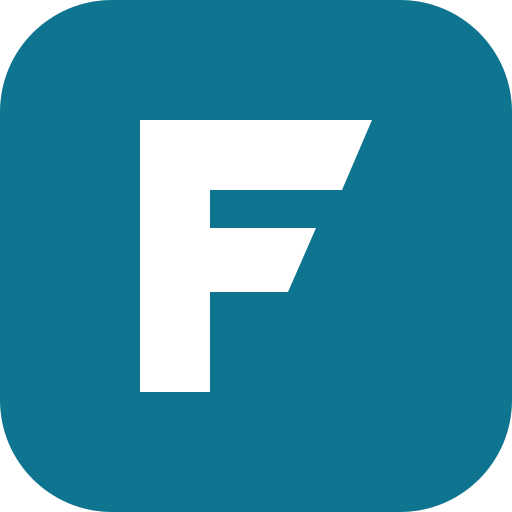

<!-- Fast Site panel essentials: navbar + sidebar. Load it into every panel page (see the loader at the bottom). -->
<style>
  :root{--lp-nav-h:66px;--lp-side-w:248px}
  #panelEssentials{display:contents} /* keeps the navbar sticky for the whole page */

  /* ---- navbar (same as navbar.html) ---- */
  .lp-nav{position:sticky;top:0;z-index:50;background:color-mix(in srgb,var(--bg) 88%,transparent);backdrop-filter:blur(12px);border-bottom:1px solid var(--line);color:var(--text)}
  .lp-nav-in{max-width:1180px;margin:0 auto;padding:0 20px;height:66px;display:flex;align-items:center;justify-content:space-between}
  .lp-left{display:flex;align-items:center;gap:14px;min-width:0}
  .lp-brand{display:flex;align-items:center;gap:10px;font-weight:700;font-size:19px;color:var(--text);text-decoration:none;letter-spacing:-.02em}
  .lp-brand img{height:30px;width:auto;display:block}
  .lp-theme,.lp-side-btn{display:grid;place-items:center;width:40px;height:40px;border-radius:10px;border:1px solid var(--line);background:var(--surface);color:var(--text);cursor:pointer;padding:0}
  .lp-theme:hover,.lp-side-btn:hover{background:var(--soft)}
  .lp-theme svg,.lp-side-btn svg{width:20px;height:20px;fill:currentColor}
  .lp-theme .sun{display:none}
  [data-theme=dark] .lp-theme .sun{display:block}
  [data-theme=dark] .lp-theme .moon{display:none}
  .lp-nav a:focus-visible,.lp-nav button:focus-visible,.lp-side a:focus-visible{outline:2px solid var(--accent);outline-offset:3px}

  /* ---- sidebar ---- */
  .lp-side{position:fixed;z-index:40;top:var(--lp-nav-h);left:0;bottom:0;width:var(--lp-side-w);overflow-y:auto;padding:18px 12px;background:var(--surface);border-right:1px solid var(--line);color:var(--text);transform:translateX(-100%);visibility:hidden;transition:transform .22s ease,visibility 0s .22s}
  .lp-side-open .lp-side{transform:none;visibility:visible;transition:transform .22s ease}
  .lp-side h2{margin:0 10px 10px;font-size:11px;font-weight:700;letter-spacing:.06em;text-transform:uppercase;color:var(--muted)}
  .lp-side ul{list-style:none;margin:0;padding:0;display:flex;flex-direction:column;gap:4px}
  .lp-side a{display:flex;align-items:center;gap:12px;padding:10px 12px;border-radius:12px;color:var(--muted);font:600 15px Inter,system-ui,sans-serif;text-decoration:none;transition:background .15s,color .15s}
  .lp-side a svg{width:20px;height:20px;flex-shrink:0;fill:currentColor}
  .lp-side a:hover{background:var(--soft);color:var(--text)}
  .lp-side a[aria-current=page]{background:var(--glow);color:var(--accent)}
  .lp-backdrop{position:fixed;z-index:39;inset:var(--lp-nav-h) 0 0 0;background:rgba(0,0,0,.5);opacity:0;pointer-events:none;transition:opacity .2s}

  /* wide screens: the sidebar pushes the page content */
  @media(min-width:901px){
    main,#footer{transition:margin-left .22s ease}
    .lp-side-open main,.lp-side-open #footer{margin-left:var(--lp-side-w)}
  }
  /* small screens: the sidebar slides over the page */
  @media(max-width:900px){
    .lp-side{box-shadow:0 20px 50px -10px rgba(0,0,0,.5)}
    .lp-side-open .lp-backdrop{opacity:1;pointer-events:auto}
  }
  @media(prefers-reduced-motion:reduce){.lp-side,.lp-backdrop,main,#footer{transition:none!important}}
</style>

<nav class="lp-nav" aria-label="Main">
  <div class="lp-nav-in">
    <div class="lp-left">
      <a class="lp-brand" href="../index.html"><span>Fast Site</span></a>
      <button class="lp-side-btn" id="lpSideBtn" type="button" aria-label="Toggle sidebar" aria-controls="lpSide" aria-expanded="false">
        <svg viewBox="0 0 24 24" aria-hidden="true"><path d="M3 5h18v2H3zm0 6h18v2H3zm0 6h18v2H3z"/></svg>
      </button>
    </div>
    <button class="lp-theme" data-theme-toggle type="button" aria-label="Switch between dark and light mode">
      <svg class="moon" viewBox="0 0 24 24"><path d="M12 3a9 9 0 1 0 9 9c0-.46-.04-.92-.1-1.36a5.4 5.4 0 0 1-4.4 2.26 5.4 5.4 0 0 1-5.4-5.4c0-1.81.89-3.42 2.26-4.4A9.2 9.2 0 0 0 12 3z"/></svg>
      <svg class="sun" viewBox="0 0 24 24"><path d="M12 7a5 5 0 1 0 0 10 5 5 0 0 0 0-10zM2 13h2v-2H2v2zm18 0h2v-2h-2v2zM11 2v2h2V2h-2zm0 18v2h2v-2h-2zM5.99 4.58 4.58 5.99l1.41 1.41 1.42-1.41-1.42-1.42zm12.02 12.02-1.41 1.41 1.41 1.42 1.42-1.42-1.42-1.41zM18.01 7.4l1.41-1.41-1.41-1.41-1.42 1.41 1.42 1.41zM6 16.6l-1.42 1.41 1.42 1.42 1.41-1.42L6 16.6z"/></svg>
    </button>
  </div>
</nav>

<aside class="lp-side" id="lpSide" aria-label="App panel">
  <h2>App panel</h2>
  <ul>
    <li><a data-page="overview" href="overview.html?id=">
      <svg viewBox="0 0 24 24" aria-hidden="true"><path d="M3 13h8V3H3zm0 8h8v-6H3zm10 0h8V11h-8zm0-18v6h8V3z"/></svg>Overview</a></li>
    <li><a data-page="file-system" href="file-system?id=">
      <svg viewBox="0 0 24 24" aria-hidden="true"><path d="M10 4H4a2 2 0 0 0-2 2v12a2 2 0 0 0 2 2h16a2 2 0 0 0 2-2V8a2 2 0 0 0-2-2h-8z"/></svg>File system</a></li>
    <li><a data-page="settings" href="settings?id=">
      <svg viewBox="0 0 24 24" aria-hidden="true"><path d="M19.14 12.94c.04-.31.06-.63.06-.94s-.02-.63-.06-.94l2.03-1.58a.5.5 0 0 0 .12-.64l-1.92-3.32a.5.5 0 0 0-.61-.22l-2.39.96a7 7 0 0 0-1.62-.94l-.36-2.54a.49.49 0 0 0-.48-.41h-3.84a.49.49 0 0 0-.48.41l-.36 2.54c-.59.24-1.13.56-1.62.94l-2.39-.96a.49.49 0 0 0-.61.22L2.7 8.84a.49.49 0 0 0 .12.64l2.03 1.58c-.04.31-.07.63-.07.94s.03.63.07.94l-2.03 1.58a.5.5 0 0 0-.12.64l1.92 3.32c.12.22.37.29.61.22l2.39-.96c.5.38 1.03.7 1.62.94l.36 2.54c.05.24.26.41.48.41h3.84c.24 0 .44-.17.48-.41l.36-2.54c.59-.24 1.13-.56 1.62-.94l2.39.96c.22.08.49 0 .61-.22l1.92-3.32a.5.5 0 0 0-.12-.64zM12 15.6A3.6 3.6 0 1 1 12 8.4a3.6 3.6 0 0 1 0 7.2z"/></svg>Settings</a></li>
    <li><a data-page="backups" href="backups?id=">
      <svg viewBox="0 0 24 24" aria-hidden="true"><path d="M19.35 10.04A7.49 7.49 0 0 0 12 4C9.11 4 6.6 5.64 5.35 8.04A5.99 5.99 0 0 0 0 14c0 3.31 2.69 6 6 6h13c2.76 0 5-2.24 5-5 0-2.64-2.05-4.78-4.65-4.96zM17 13l-5 5-5-5h3V9h4v4z"/></svg>Backups</a></li>
  </ul>
</aside>
<div class="lp-backdrop" id="lpBackdrop"></div>

<script>
(function () {
  var root = document.documentElement, body = document.body;
  var btn = document.getElementById("lpSideBtn");
  var side = document.getElementById("lpSide");
  var backdrop = document.getElementById("lpBackdrop");
  var wide = matchMedia("(min-width:901px)");

  // 1) keep the app id on every sidebar link
  var id = new URLSearchParams(location.search).get("id") || "";
  side.querySelectorAll("a[data-page]").forEach(function (a) {
    a.href = a.getAttribute("href").split("?")[0] + "?id=" + encodeURIComponent(id);
  });

  // 2) highlight the page we are on
  var here = location.pathname.replace(/\/+$/, "").split("/").pop().replace(/\.html$/, "");
  var cur = side.querySelector('a[data-page="' + here + '"]');
  if (cur) cur.setAttribute("aria-current", "page");

  // 3) open / close the sidebar (wide screens remember the choice, small screens start closed)
  function set(open, save) {
    body.classList.toggle("lp-side-open", open);
    btn.setAttribute("aria-expanded", String(open));
    if (save && wide.matches) { try { localStorage.setItem("lp-sidebar", open ? "open" : "closed"); } catch (e) {} }
  }
  var saved = null;
  try { saved = localStorage.getItem("lp-sidebar"); } catch (e) {}
  set(wide.matches && saved !== "closed", false);

  btn.addEventListener("click", function () { set(!body.classList.contains("lp-side-open"), true); });
  backdrop.addEventListener("click", function () { set(false, false); });
  document.addEventListener("keydown", function (e) {
    if (e.key === "Escape" && !wide.matches && body.classList.contains("lp-side-open")) { set(false, false); btn.focus(); }
  });
  side.addEventListener("click", function (e) { if (!wide.matches && e.target.closest("a")) set(false, false); });
  wide.addEventListener("change", function () {
    var s = null; try { s = localStorage.getItem("lp-sidebar"); } catch (e) {}
    set(wide.matches && s !== "closed", false);
  });

  // 4) dark / light switch (skipped if the page already handles it)
  if (!window.__lpThemeBound) {
    window.__lpThemeBound = true;
    document.addEventListener("click", function (e) {
      if (!e.target.closest("[data-theme-toggle]")) return;
      var next = root.dataset.theme === "dark" ? "light" : "dark";
      root.dataset.theme = next;
      try { localStorage.setItem("lp-theme", next); } catch (err) {}
    });
  }
})();
</script>

<!--
  HOW TO USE (put this in each panel page, e.g. overview.html, backups.html ...):

  <div id="panelEssentials"></div>
  <main> ... page content ... </main>
  <script>
    fetch("assets/panel-essentials.html").then(r => r.text()).then(html => {
      const box = document.getElementById("panelEssentials");
      box.innerHTML = html;
      // scripts added through innerHTML do not run, so re-create them:
      box.querySelectorAll("script").forEach(old => {
        const s = document.createElement("script");
        s.textContent = old.textContent;
        old.replaceWith(s);
      });
    });
  </script>

  The page needs the same CSS variables as the dashboard (--bg, --surface, --soft, --line, --text, --muted, --accent, --glow)
  and its content inside <main> (a footer with id="footer" is pushed too).
-->
